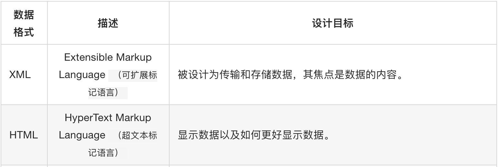

2.2 xpath路径表达式
什么是xpath？
- XPath即为XML路径语言，它是一种用来确定XML（标准通用标记语言的子集）文档中某部分位置的语言。XPath基于XML的树状结构，有不同类型的节点，包括元素节点，属性节点和文本节点，提供在数据结构树中找寻节点的能力。[1] 起初 XPath 的提出的初衷是将其作为一个通用的、介于XPointer与XSLT间的语法模型。但是 XPath 很快的被开发者采用来当作小型查询语言。
什么是XML?
* XML 指可扩展标记语言（EXtensible Markup Language）
* XML 是一种标记语言，很类似 HTML
* XML 的设计宗旨是传输数据，而非显示数据
* XML 的标签需要我们自行定义。
* XML 被设计为具有自我描述性。
* XML 是 W3C 的推荐标准
W3School官方文档：http://www.w3school.com.cn/xml/index.asp
XML与HTML的区别

xpath路径语句在自动化web测试中的作用
- 在我们做手动测试的手，我们可以很轻易的找到我们需要点击的输入框、按钮等，但是计算机没有这么智能，于是我们就用到了xpath路径表达式来在一个web页面中定位元素，其语法同css有异曲同工之处，同学们可以在两者之间选择一个，当然最好都掌握